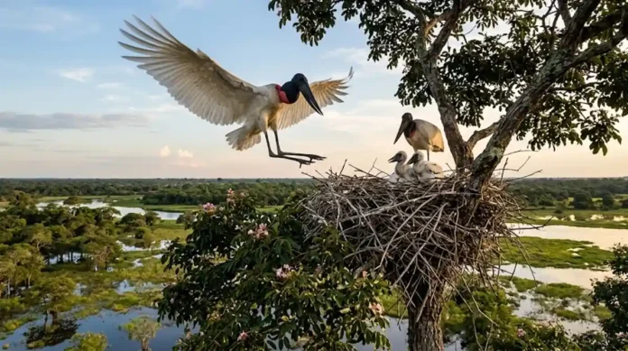

Bem-vindo ao PANTANAL-MS
O Pantanal é a maior planície de inundação contínua do mundo, localizada principalmente no Brasil (Mato Grosso e Mato Grosso do Sul), além de partes da Bolívia e do Paraguai.
O bioma é famoso pelo seu ciclo das águas: na época das chuvas, os rios transbordam e inundam a maior parte da região; na seca, a água recua, deixando o solo rico e concentrando os animais ao redor das lagoas.
É um dos lugares com a maior biodiversidade do planeta, servindo de abrigo para espécies icônicas como a onça-pintada, o tuiuiú (ave símbolo do bioma), o jacaré-do-pantanal e a arara-azul. Em 2000, foi reconhecido pela UNESCO como Patrimônio Natural da Humanidade.
